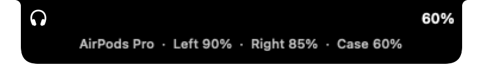
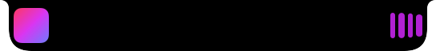
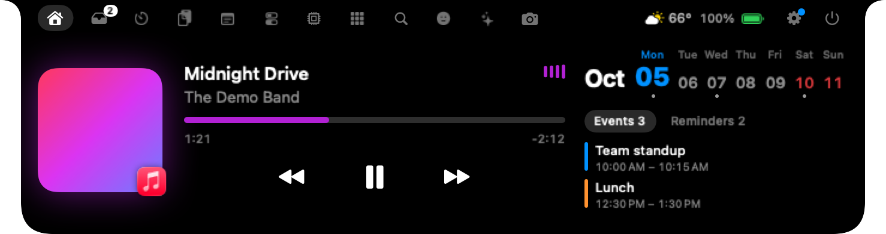

🔊
System HUDs, reimagined새로워진 시스템 HUD
Volume, brightness (even external displays over DDC), keyboard backlight, charging and AirPods battery, right in the notch.
볼륨, 밝기(DDC 외부 모니터 포함), 키보드 백라이트, 충전, AirPods 배터리까지 노치 안에서.

Music, files, your calendar and system HUDs live right where the camera sits. Hover to open. That's it.
음악, 파일, 일정, 시스템 HUD가 카메라 바로 아래에 있습니다. 마우스를 올리면 열립니다. 그게 전부예요.
brew install --cask namekun/tap/nunsseop


Hover the notch above — just like on your Mac.위의 노치에 마우스를 올려 보세요. Mac에서와 똑같이요.
Picks up whatever is playing
무엇을 재생하든 잡아냅니다
These are real screenshots. Pick a tab to see it.
모두 실제 화면입니다. 탭을 골라 보세요.
Built natively in Swift and SwiftUI. No Electron, no account, no tracking.
Swift와 SwiftUI로 만든 네이티브 앱. Electron도, 계정도, 추적도 없습니다.
Volume, brightness (even external displays over DDC), keyboard backlight, charging and AirPods battery, right in the notch.
볼륨, 밝기(DDC 외부 모니터 포함), 키보드 백라이트, 충전, AirPods 배터리까지 노치 안에서.

Paste one hook and the notch tells you when Claude Code is waiting for you. Any local script can send a message the same way.
훅 하나만 붙여 넣으면 Claude Code가 기다릴 때 노치가 알려 줍니다. 어떤 로컬 스크립트든 같은 방식으로 보낼 수 있어요.
When the track changes the title slides out for a moment, and the line being sung can stay under the notch while you work.
곡이 바뀌면 제목이 잠깐 나왔다 사라지고, 원하면 지금 부르는 가사가 작업 중에도 노치 아래에 흐릅니다.
This week, today's events and what's due. Tick reminders off without leaving what you're doing.
이번 주, 오늘 일정, 기한이 다가온 일. 하던 일을 멈추지 않고 미리 알림을 완료하세요.
A dot on the notch whenever any app is using your camera or microphone, so nothing listens in unnoticed.
어떤 앱이든 카메라나 마이크를 쓰는 동안 노치에 표시가 뜹니다. 몰래 듣는 앱은 없어요.
Start it from Tools; a red dot and timer stay on the notch, and the video lands on the shelf when you stop.
도구 탭에서 시작하면 노치에 빨간 점과 시간이 남고, 멈추면 영상이 선반에 들어갑니다.
Search what you copied and copy it again in one click. Jot notes without opening another app.
복사한 내용을 검색해 한 번에 다시 복사하고, 다른 앱 없이 바로 메모하세요.
Today's weather in the header, and a nudge when a download finishes. Screenshots drop onto the shelf by themselves.
헤더에 오늘 날씨를, 다운로드가 끝나면 살짝 알려 줍니다. 스크린샷은 알아서 선반에 들어가요.
Low battery on the Mac, mouse or keyboard, fully charged, Caps Lock on. Glanceable, then gone.
Mac·마우스·키보드 배터리 부족, 충전 완료, Caps Lock 켜짐. 한눈에 보이고 금방 사라집니다.
Swipe down to open, up to close, sideways on Home to skip the track.
아래로 쓸면 열기, 위로 쓸면 닫기, 홈 탭에서 옆으로 쓸면 다음 곡.
Check your hair before the call. The camera runs only while the tab is open.
통화 전에 머리 한 번 확인. 카메라는 탭이 열려 있을 때만 켜집니다.
Pick your tabs and their order, what the header and the collapsed notch show, and which pop-ups you get. During a call it shows the call app and how long you've been talking, and when idle each side of the collapsed notch can show Claude Code usage left, battery, weather or the date. Anything you turn off stops running. On macOS 26 it wears Liquid Glass, and it can hide while the lid is closed.
탭과 순서, 헤더와 접힌 노치에 보일 것, 받을 알림을 직접 고르세요. 통화 중에는 통화 앱과 통화 시간이, 평소에는 접힌 노치 양쪽에 Claude Code 남은 양, 배터리, 날씨, 날짜를 띄워 둘 수 있어요. 꺼 둔 기능은 동작하지 않습니다. macOS 26에서는 Liquid Glass로 그려지고, 덮개를 닫았을 때 숨길 수도 있어요.
Follows your Mac's language. Screens without a notch get a neat pill at the top instead.
Mac 언어 설정을 따릅니다. 노치가 없는 화면에는 위쪽 가운데에 작은 알약 모양으로 나타나요.
macOS 14 Sonoma or later, on Apple silicon or Intel.
macOS 14 Sonoma 이상, Apple 실리콘과 Intel 모두.
One Homebrew line, or drag it from the dmg. It lives in the notch, not the Dock.
Homebrew 한 줄, 또는 dmg에서 끌어다 놓기. Dock이 아니라 노치에 삽니다.
It opens. Move away and it tucks itself back. Play some music and watch it come alive.
열립니다. 마우스를 떼면 다시 접혀요. 음악을 틀면 살아 움직입니다.
Right-click the notch and open Settings to choose tabs, pop-ups and size.
노치를 우클릭해 설정을 열고 탭, 알림, 크기를 고르세요.
brew install --cask namekun/tap/nunsseop
Homebrew clears the quarantine flag for you, so the app opens right away.
Homebrew가 격리 표시를 알아서 지워 주기 때문에 바로 실행됩니다.
# after dragging Nunsseop to ApplicationsNunsseop을 응용 프로그램 폴더로 옮긴 뒤
xattr -dr com.apple.quarantine /Applications/Nunsseop.appDownload the dmg from Releases. The app isn't notarized yet, so run the line above once.
Releases에서 dmg를 받으세요. 아직 공증되지 않은 앱이라 위 명령을 한 번 실행해야 합니다.
git clone https://github.com/namekun/Nunsseop.git cd Nunsseop ./scripts/bundle.sh release open build/Nunsseop.app
Needs the Xcode command line tools (Swift 5.10+).
Xcode 명령줄 도구(Swift 5.10 이상)가 필요합니다.
Since macOS 15.4, the private MediaRemote framework only answers apps signed by Apple. Nunsseop runs a tiny helper inside the system's /usr/bin/perl to read what's playing and send play, pause, skip and seek.
macOS 15.4부터 비공개 MediaRemote 프레임워크는 Apple이 서명한 앱에만 응답합니다. Nunsseop은 시스템의 /usr/bin/perl 안에서 작은 헬퍼를 실행해 재생 정보를 읽고 재생·일시정지·건너뛰기·위치 이동을 보냅니다.
If a future macOS update blocks it, Nunsseop falls back to AppleScript for Music and Spotify and to reading media tabs in browsers.
이후 macOS 업데이트로 막히면 Music·Spotify는 AppleScript로, 브라우저는 미디어 탭 읽기로 자동 전환됩니다.
No personal data is collected or sent. Network use is limited to a daily release check, lyrics from LRCLIB, weather from Open-Meteo for the city you choose, and fallback artwork — each can be turned off. AI usage is read from files Claude Code and Codex already keep on your Mac.
개인 정보는 수집하거나 전송하지 않습니다. 네트워크는 하루 한 번 새 버전 확인, LRCLIB 가사, 지정한 도시의 Open-Meteo 날씨, 대체 경로의 앨범아트에만 쓰며 모두 끌 수 있습니다. AI 사용량은 Claude Code와 Codex가 이 Mac에 이미 남기는 파일에서 읽습니다.
Each permission is requested the first time you use the feature that needs it.
권한은 그 기능을 처음 쓸 때만 요청합니다.
xattr -dr com.apple.quarantine /Applications/Nunsseop.app once after copying it from the dmg.xattr -dr com.apple.quarantine /Applications/Nunsseop.app을 한 번 실행하세요.⌘Space, record that shortcut in Settings › Services and Nunsseop will take you to Keyboard Shortcuts to switch Spotlight's off.⌘Space로 쓰려면 설정 › 서비스에서 그 단축키를 녹화하세요. Spotlight 단축키를 끌 수 있도록 키보드 단축키 화면으로 안내합니다.